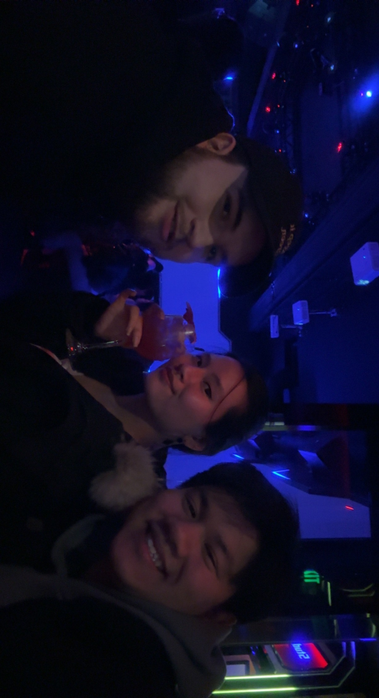

Ryan Trinh's Page
This website will give you a brief summary about myself.
Please feel free to click around and explore!
About me
Education
Hobbies
Picture of me and my friends going out to the city!
